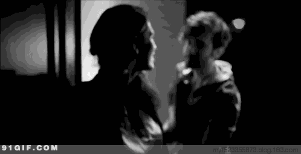
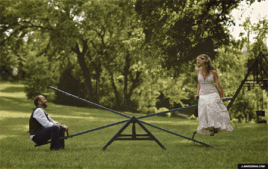
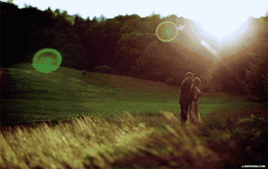
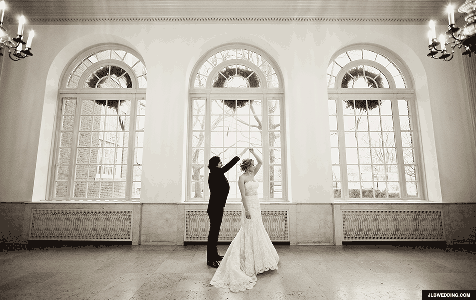

在乎你的人，永远比你主动！
用心甘情愿的态度，过随遇而安的生活
追来的很累，强求的不美。
想你的人，总会主动找你；
不想你的人，
找了也是不睬不理。
何苦？

一直的低三下四，只能贬低了自己；
再三的委曲求全，只能难为着自己。

其实，
心里有你的人，
何须问，何须求，何须找？
该出现的，总会出现！
心里没你的人，不必缠，不必留，
不必要，不值得期盼。
是你的走不掉，不是你的求不到。
风景不梦，不失望；
感情不争，不疼痛！
你再优秀，也得碰上识货的人。
你再付出，也得遇上感恩的人。
你再真诚， 也得赶上有心的人。
你再谦让，也得面对珍惜的人。

提醒那些没心没肺的人们，
知道点好歹，懂得点珍惜，
对你好是因为在意你，
而不是欠你的。

不要等到有一天，
人家头也不回地离开你了！
才知道失去的意义！
真情难遇，知音难寻，
珍惜眼前人！